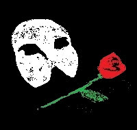

01
오늘 무대
19세기 파리 오페라 하우스. 지하에 숨은 음악가, 가면 뒤의 유령이 소프라노 크리스틴을 가르칩니다. 사랑은 집착이 되고, 극장은 그의 악보가 됩니다.
1막은 샹들리에가 빛나던 시절로 돌아가고, 2막은 가면무도회에서 다시 나타난 유령과 함께 끝나지 않는 선율로 기울어집니다. 결말은 말하지 않겠습니다. 오늘 밤, 객석에서 듣기를.


오늘 공연 · 뮤지컬
The Phantom of the Opera
01
19세기 파리 오페라 하우스. 지하에 숨은 음악가, 가면 뒤의 유령이 소프라노 크리스틴을 가르칩니다. 사랑은 집착이 되고, 극장은 그의 악보가 됩니다.
1막은 샹들리에가 빛나던 시절로 돌아가고, 2막은 가면무도회에서 다시 나타난 유령과 함께 끝나지 않는 선율로 기울어집니다. 결말은 말하지 않겠습니다. 오늘 밤, 객석에서 듣기를.

02
03
가사는 무대에 맡기고, 이름만 적어 둡니다.

04
한국 초연은 2001년 LG아트센터. 그 뒤로 예술의전당, 샤롯데씨어터, 블루스퀘어, 부산 드림씨어터를 지나 왔습니다.
오늘 밤은 그 계보를 잇는 한 회입니다. 7세 이상.
문을 닫고 나가기